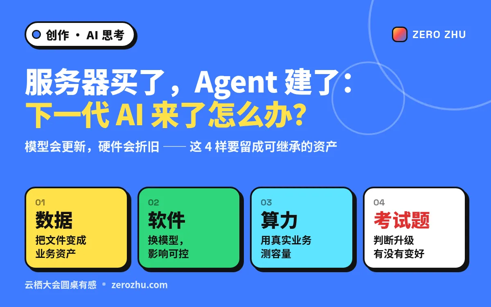
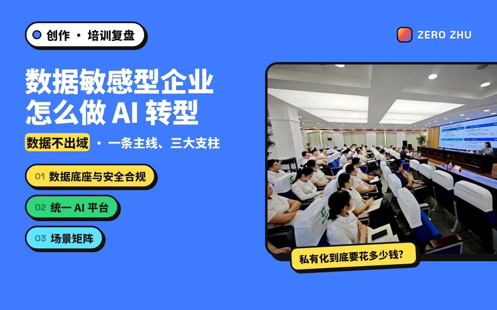
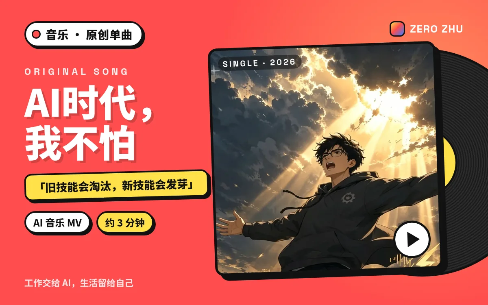
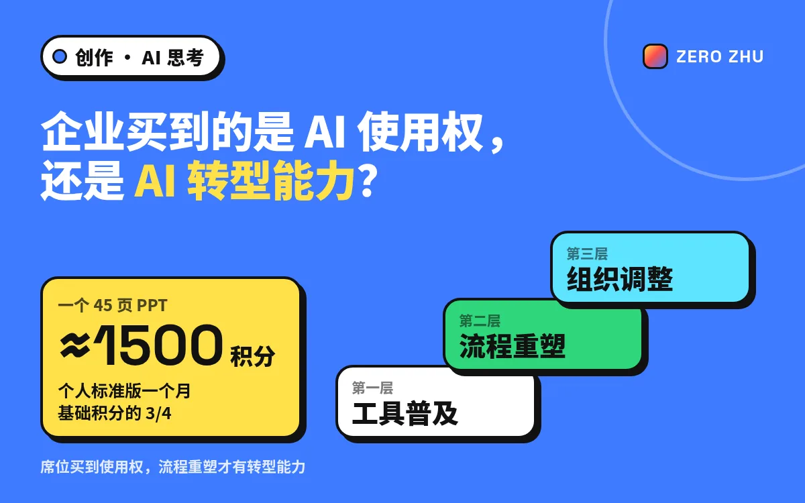
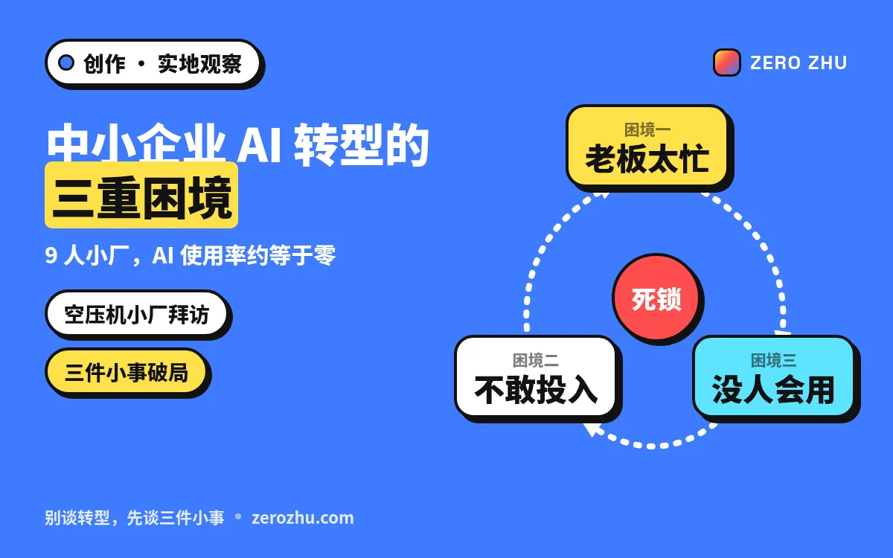
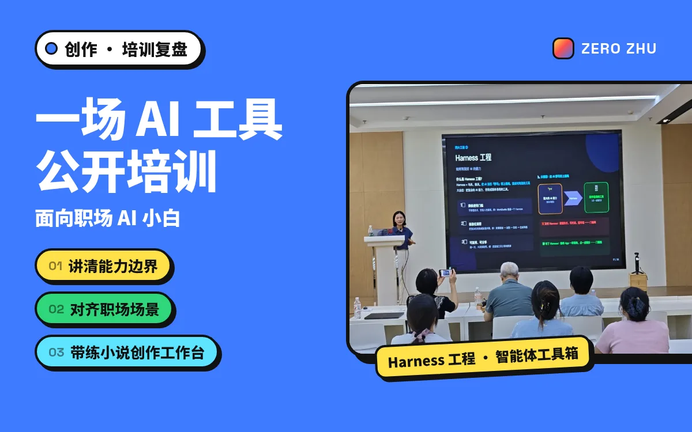
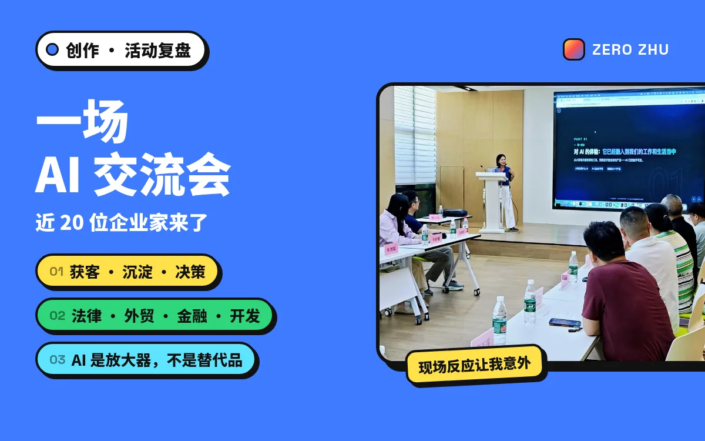
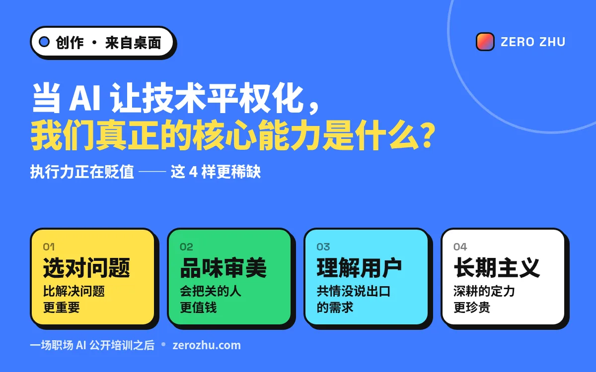
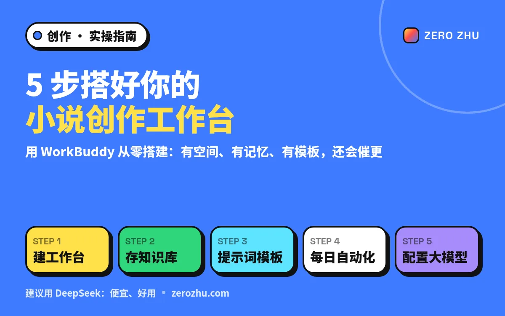
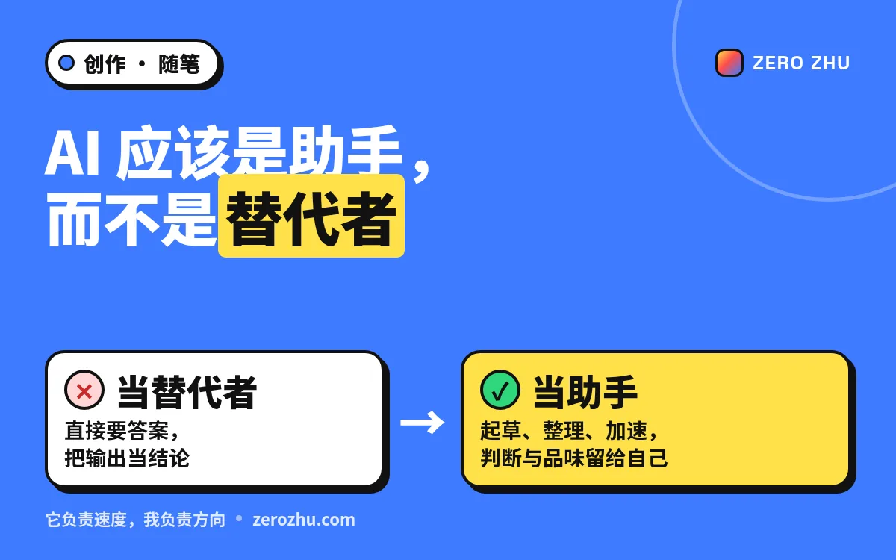

关于 AI、工作与生活的随笔。把工具当助手，把思考留给自己。

新 · AI THINKING云栖大会圆桌之后：数据、软件、算力和「考试题」，哪些投入能留给下一代技术。

新 · 培训复盘数据不出域：一条主线、三大支柱，以及私有化到底要花多少钱。

新 · 音乐写给 AI 时代的歌：不焦虑被替代，而是学会把工作交给 AI，把生活留给自己。

新 · AI THINKING一个PPT约1500积分：席位买到使用权，流程重塑才有转型能力。

新 · 实地观察9人小厂AI使用率约等于零：忙、怕、没人会用——三重死锁。

培训复盘 · 职场公开课面向职场 AI 小白：讲清能力边界，现场带练工作台，把培训做成可带走的实操。

新 · 活动复盘三个落地场景演示，法律/外贸/金融/开发者的四个真实洞察。

新 · 来自桌面公开培训之后：执行力贬值，选问题、品味、共情与长期主义更稀缺。

新 · 来自桌面WorkBuddy 从零搭建：有空间、有记忆、有模板，还会催更。

线上已有把 AI 的输出当草稿，不当结论；判断与品味仍由人掌握。